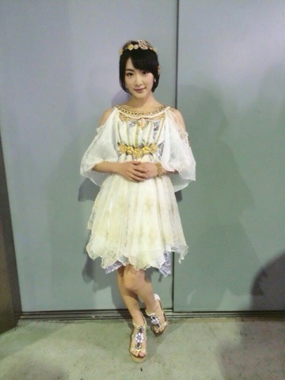
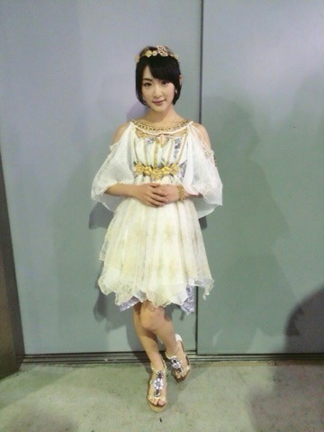
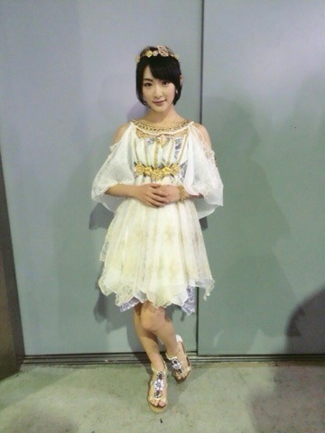
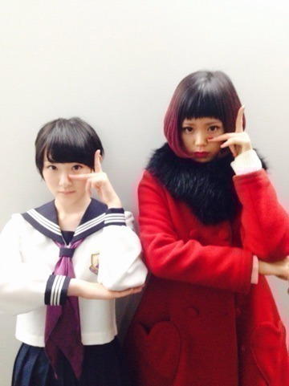
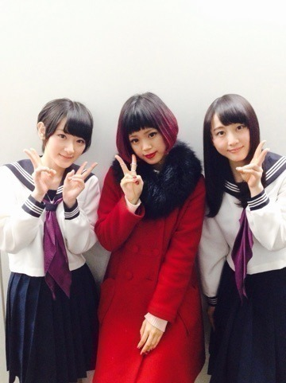

| 2015/01 25 Sun | 初めて尽くしの一週 間ヽ(・∀・)ノ |
まず！
AKB48リクエストアワーに出演しました！！
ここがロドスだ、ここで跳べ！を歌わせてもらっています！！
衣装はギリシャ神話みたい〜
 


アルバムの表題曲を歌わせて頂けることに感謝です！
あと、AKB48 39枚目シングルの選抜に選んで頂きました。
選ばれたからにはきちんとプラスになる様に頑張ります！！
いろいろファンの方は思うと思うし、メンバーも考えること沢山あると思います。
乃木坂でもそれは言える事で、
私は今いるポジションに結果があってないとよく言われます。
それは誰よりも私がわかっています。
だから、私は自分が全力で勝負できて、結果が残せるところでまずグループに貢献したいなと思います。
どうすればいいのだろうか。。。
試行錯誤なうです！
そして！
Mステに出演しましたヽ(・∀・)ノ
初のメドレーを披露させて頂きました！！
制服のマネキン
君の名は希望
いい曲だと言ってくださる方が沢山いらっしゃいました

私も、この二曲を披露出来たこと本当に嬉しかった！！
地上波では約2年振りくらいのセンターポジション！！
緊張した！！！！
あと！！
ハナエちゃんに会ったよ〜

マネキンポーズ！！
生駒身長w

れなさんと三人で〜
いつかハナエちゃんと同じ日にMステ出たいなと思いました！！
生駒もっと力つけなければ！！
とりあえず今日は休みます〜
へばなっ☆彡
コメント(1074)
2015/01/25 23:42